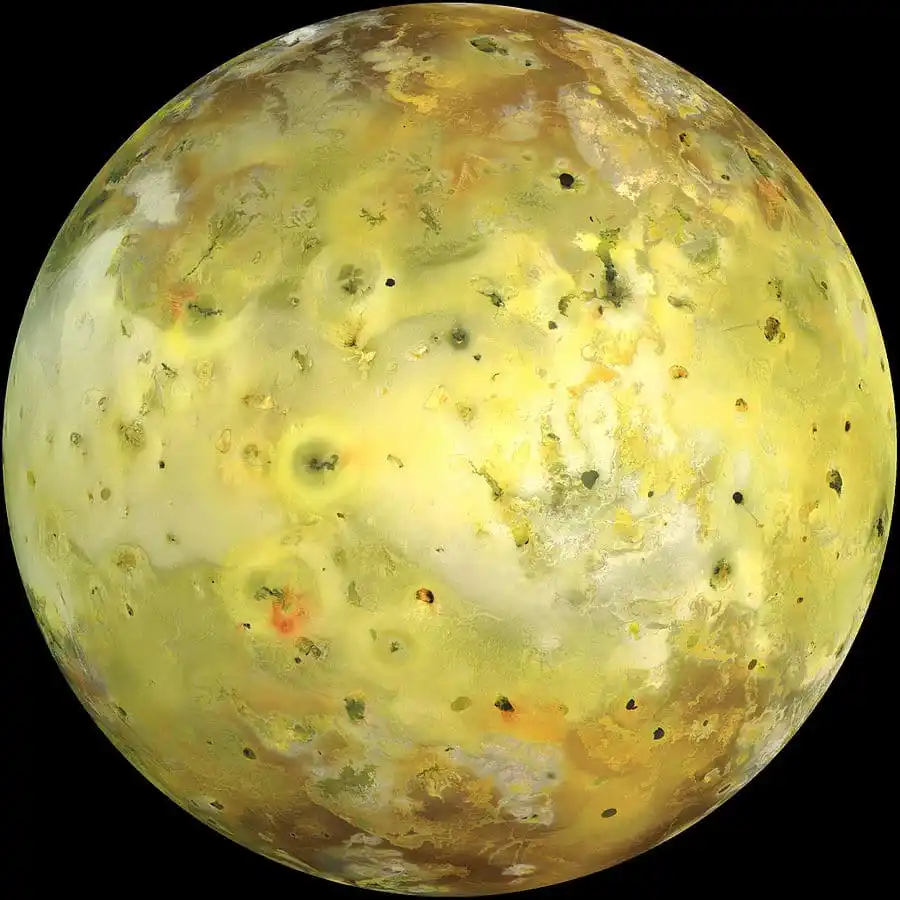

Io
| Dati Principali | |
|---|---|
| Pianeta madre | Giove |
| Diametro | 3.643 km |
| Massa | 8,93 × 10²² kg |
| Distanza da Giove | 421.700 km |
| Periodo orbitale | 1,77 giorni |
| Superficie | Vulcani attivi, pianure di zolfo e silicato |
| Atmosfera | Tenue, composta principalmente da anidride solforosa |


Struttura di Io
Io ha un nucleo di ferro-nichel, un mantello silicatico e una crosta relativamente sottile.
È il corpo geologicamente più attivo del Sistema Solare, con centinaia di vulcani attivi e lava fusa in superficie. Il calore interno è generato dalle forze mareali esercitate da Giove e dagli altri satelliti galileiani.
Curiosità su Io
- 🌋 Ospita vulcani che eruttano lava a temperature superiori a 1.600 °C.
- 🌕 Ha una superficie colorata da zolfo e composti solforosi.
- 🧲 Influenza la magnetosfera di Giove con il suo materiale espulso.
- 🔭 È stato scoperto da Galileo Galilei nel 1610.